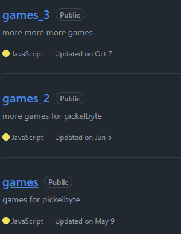
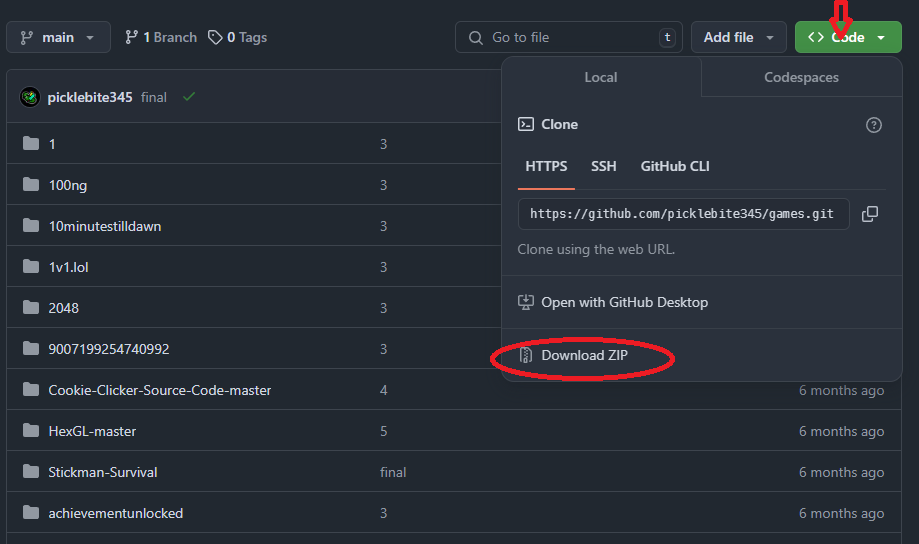
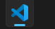
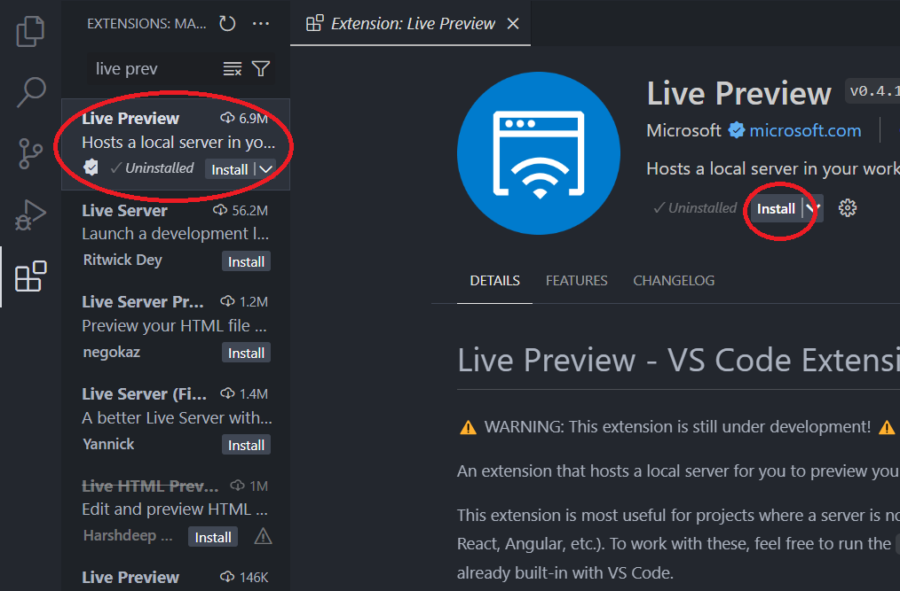
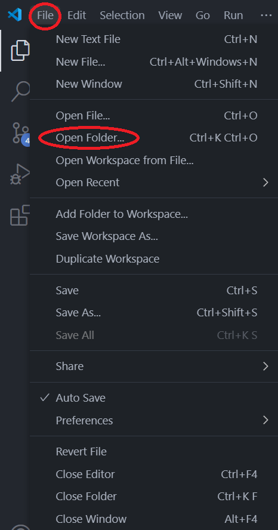
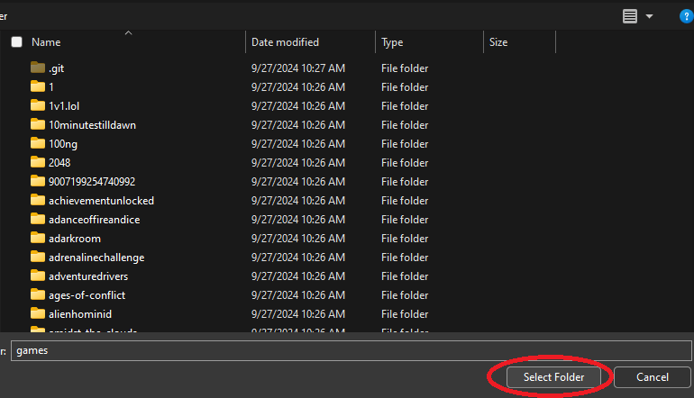
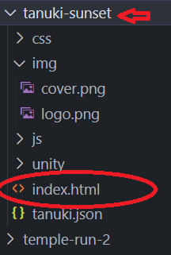
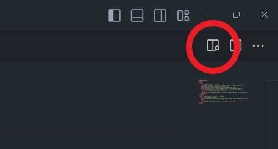

Under Construction Currently
Prerequisites:
1: Download the games you want from github.com/cucumberbyte(Warning: very large downloads, make sure you have time and space)
 2: Make sure you have VS Code (Visual Studio Code) and open it.
3: Go to the extensions tab and search live preview and install it.
4: Go back to the files icon and press file>open folder..., then open the games folder that you downloaded.
 5: Choose the game you want to play from the sidebar, click on it and find the index.html file.
6: Make sure you have index.html open, then in the top right corner of the screen, click this icon:
7: Now you're all set! if you want you can copy the link that looks like this into chrome or a browser and play there. As long as VS Code is running, it will work.
 Back to site
Back to site